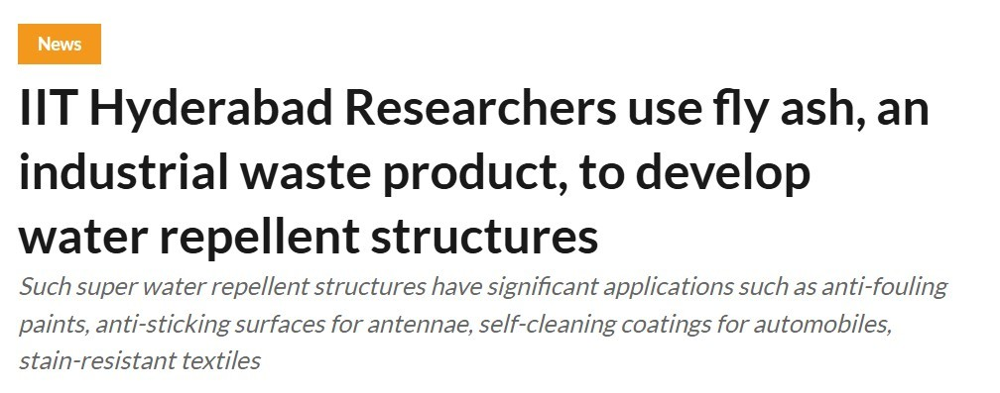

October 12, 2023
Prof. Deshpande's Team Makes Breakthrough in Nanomaterials
The IIT Hyderabad research group recently published findings that could revolutionize how we approach surface functionalization in carbon nanoparticles...
Read Full Article →